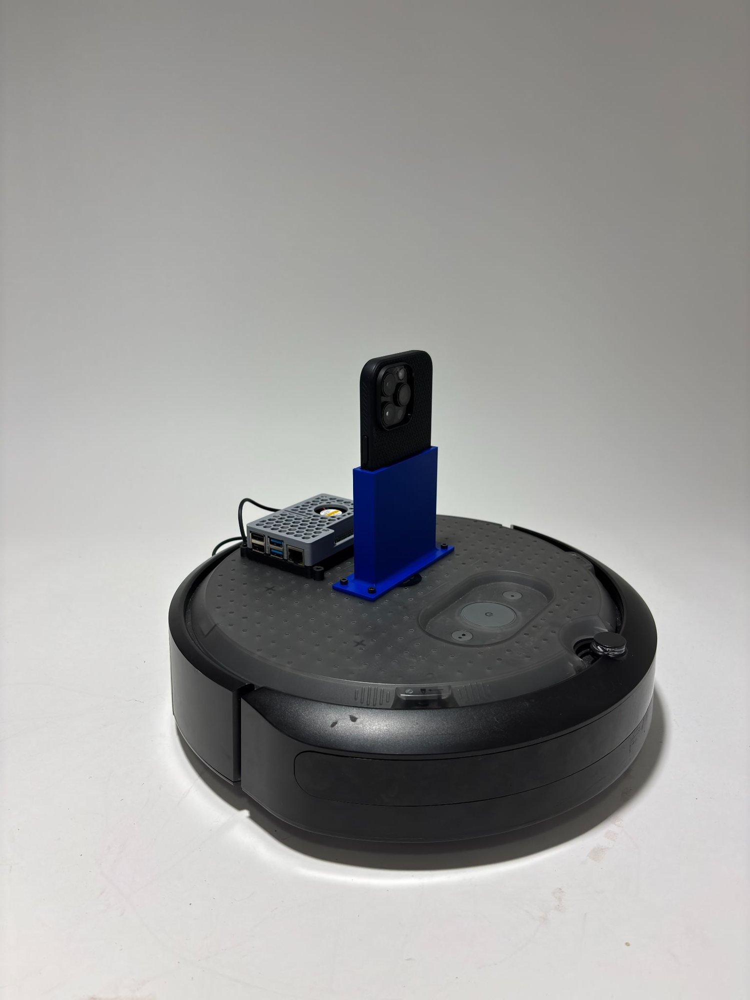
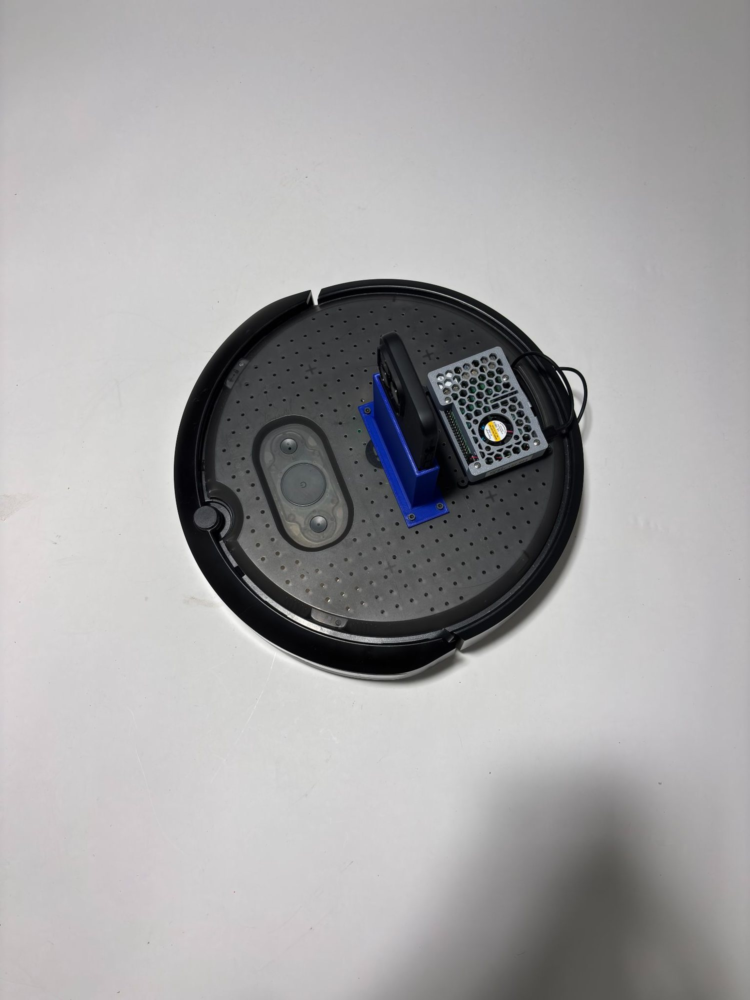
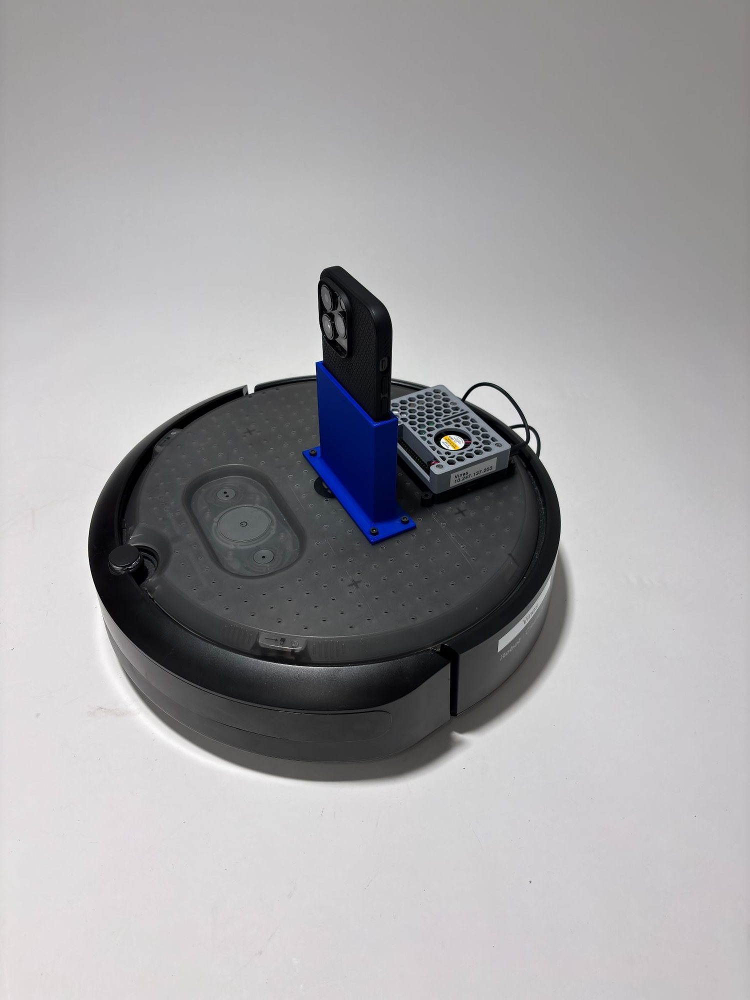

Project analysis
For this project, we designed a system to remotely navigate the Create 3 robot through a maze while avoiding obstacles and reaching a target location. The robot was controlled by sending values to Airtable while the Create 3 reads them and completes tasks, which allowed the operator in the classroom to control the robot located in Nolop. To provide visual feedback, we used a live camera setup so the operator could see the robot's position in the maze and adjust movements accordingly. I created a simple setup using a 3D-printed phone stand following the project constraints such as not using tape or hot glue. The main challenge was coordinating the camera view with the Airtable commands to move the robot accurately and avoid obstacles in the maze.
How it works
This project uses two small Python programs to enable "remote driving" of an iRobot Create 3 through Airtable. The first script runs on the robot (ROS 2) and polls an Airtable table ~5 times per second, reading three rows — VelocityLinear, AngularVelocity, and an optional Dock flag — then converts those values into a ROS Twist message published to cmd_vel to move the robot; if Dock is toggled, it safely stops and triggers the Create 3 docking action. The second script is a terminal-based controller that uses curses to read keyboard inputs (W/S/A/D) and writes the corresponding linear and angular commands into Airtable via a PATCH request, effectively turning Airtable into a simple "command bus" between the classroom operator and the robot in Nolop. To make control safer and smoother, the terminal controller includes a deadman timer that automatically resets values to zero if no key is pressed recently, preventing the robot from continuing to drive if the operator loses focus or the connection lags.
View Python code — terminal controller (writes to Airtable)
import os
import time
import curses
import requests
# Airtable configuration
BASE_ID = "appiTPxK2hQkiF9LC"
TABLE_NAME = "Table 1"
TOKEN = "YOUR_AIRTABLE_TOKEN"
TABLE_URL = f"https://api.airtable.com/v0/appiTPxK2hQkiF9LC/Table%201"
HEADERS = {
"Authorization": f"Bearer YOUR_AIRTABLE_TOKEN",
"Content-Type": "application/json",
}
# Driving values
VEL_FWD = 1
VEL_BACK = -1
ANG_POS = 1
ANG_NEG = -1
LOOP_HZ = 50
DEADMAN_SEC = 0.25
def list_records():
r = requests.get(TABLE_URL, headers=HEADERS)
r.raise_for_status()
return r.json()["records"]
def get_record_ids():
records = list_records()
name_to_id = {}
for rec in records:
name = rec.get("fields", {}).get("Name")
if name:
name_to_id[name] = rec["id"]
missing = [n for n in ("VelocityLinear", "AngularVelocity") if n not in name_to_id]
if missing:
raise ValueError(f"Missing records with Name={missing}. Check your Airtable 'Name' field values.")
return name_to_id["VelocityLinear"], name_to_id["AngularVelocity"]
def batch_update(vel_rec_id, ang_rec_id, vel_value, ang_value):
payload = {
"records": [
{"id": vel_rec_id, "fields": {"Notes": vel_value}},
{"id": ang_rec_id, "fields": {"Notes": ang_value}},
],
"typecast": True,
}
r = requests.patch(TABLE_URL, headers=HEADERS, json=payload)
if not r.ok:
print("STATUS:", r.status_code)
print("BODY:", r.text)
print("PAYLOAD:", payload)
r.raise_for_status()
def clamp_int(x):
return int(x)
def main(stdscr):
if not TOKEN:
raise RuntimeError("AIRTABLE_TOKEN env var not set. Example: export AIRTABLE_TOKEN='pat_...'")
vel_rec_id, ang_rec_id = get_record_ids()
curses.cbreak()
stdscr.nodelay(True)
stdscr.keypad(True)
vel = 0
ang = 0
last_sent = (None, None)
last_key_time = time.time() # ADDED
stdscr.clear()
stdscr.addstr(
0, 0,
"Controls: w=+2 vel, s=-2 vel, a=-ang, d=+ang, q=quit\n"
)
stdscr.refresh()
dt = 1.0 / LOOP_HZ
while True:
key = stdscr.getch()
now = time.time()
if key != -1:
ch = chr(key).lower() if 0 <= key < 256 else ""
last_key_time = now
if ch == "q":
vel, ang = 0, 0
if (vel, ang) != last_sent:
batch_update(vel_rec_id, ang_rec_id, clamp_int(vel), clamp_int(ang))
break
elif ch == "w":
vel, ang = VEL_FWD, 0
elif ch == "s":
vel, ang = VEL_BACK, 0
elif ch == "d":
vel, ang = 0, ANG_POS
elif ch == "a":
vel, ang = 0, ANG_NEG
# deadman stop if no keypress recently
if (now - last_key_time) > DEADMAN_SEC:
vel, ang = 0, 0
if (vel, ang) != last_sent:
batch_update(vel_rec_id, ang_rec_id, clamp_int(vel), clamp_int(ang))
last_sent = (vel, ang)
stdscr.addstr(3, 0, f"VelocityLinear Notes: {vel:>4} AngularVelocity Notes: {ang:>4} ")
stdscr.refresh()
time.sleep(dt)
if __name__ == "__main__":
curses.wrapper(main)View Python code — robot node (reads from Airtable, ROS 2)
import os
import time
import requests
import rclpy
from rclpy.node import Node
from rclpy.action import ActionClient
from geometry_msgs.msg import Twist
from irobot_create_msgs.action import Dock
BASE_ID = "appiTPxK2hQkiF9LC"
TABLE_NAME = "Table 1"
URL = "https://api.airtable.com/v0/appiTPxK2hQkiF9LC/Table%201"
VEL_ROW_NAME = "VelocityLinear"
ANG_ROW_NAME = "AngularVelocity"
DOCK_ROW_NAME = "Dock"
POLL_HZ = 5 #how many times it gets data from the airtable
CMD_TOPIC = "cmd_vel"
class AirtableDrive(Node):
def __init__(self):
super().__init__("airtable_drive")
self.token = os.getenv("AIRTABLE_TOKEN")
if not self.token:
raise RuntimeError("AIRTABLE_TOKEN not set. do: export AIRTABLE_TOKEN='pat_...'")
self.headers = {"Authorization": f"Bearer {self.token}"}
self.pub = self.create_publisher(Twist, CMD_TOPIC, 10)
self.dock_client = ActionClient(self, Dock, "dock")
self.docking = False
self.last_v = None
self.last_w = None
self.last_dock = 0
self.timer = self.create_timer(1.0 / POLL_HZ, self.loop)
def get_airtable(self):
r = requests.get(URL, headers=self.headers, timeout=2.0)
r.raise_for_status()
return r.json().get("records", [])
def parse(self, records):
v = 0.0
w = 0.0
dock_flag = 0
for rec in records:
fields = rec.get("fields", {})
name = fields.get("Name")
notes = fields.get("Notes", 0)
if name == VEL_ROW_NAME:
try:
v = float(notes or 0)
except:
v = 0.0
elif name == ANG_ROW_NAME:
try:
w = float(notes or 0)
except:
w = 0.0
elif name == DOCK_ROW_NAME:
try:
dock_flag = int(notes or 0)
except:
dock_flag = 0
return v, w, dock_flag
def send_cmd(self, v, w):
msg = Twist()
msg.linear.x = float(v)
msg.angular.z = float(w)
self.pub.publish(msg)
def start_dock(self):
if self.docking:
return
self.docking = True
self.get_logger().info("docking...")
goal = Dock.Goal()
self.dock_client.wait_for_server()
fut = self.dock_client.send_goal_async(goal)
fut.add_done_callback(self.dock_goal_cb)
def dock_goal_cb(self, future):
goal_handle = future.result()
if not goal_handle.accepted:
self.get_logger().info("dock goal rejected")
self.docking = False
return
self.get_logger().info("dock goal accepted")
result_fut = goal_handle.get_result_async()
result_fut.add_done_callback(self.dock_result_cb)
def dock_result_cb(self, future):
result = future.result().result
self.get_logger().info(f"dock done, is_docked={result.is_docked}")
self.docking = False
def loop(self):
try:
records = self.get_airtable()
v, w, dock_flag = self.parse(records)
#smoothness
if not self.docking:
self.send_cmd(v, w)
self.last_v, self.last_w = v, w
if (dock_flag == 1) and (self.last_dock != 1):
self.send_cmd(0.0, 0.0)
time.sleep(0.1)
self.start_dock()
self.last_dock = dock_flag
except Exception as e:
if not self.docking:
self.send_cmd(0.0, 0.0)
self.get_logger().warn(f"airtable error -> stopping. {e}")
def main():
rclpy.init()
node = AirtableDrive()
rclpy.spin(node)
node.destroy_node()
rclpy.shutdown()
if __name__ == "__main__":
main()Reflection
In this project, my role leaned much more toward the coding and software side rather than the mechanical engineering aspects. Instead of focusing on building the physical structure, I worked mainly on the programming that enabled the robot to be controlled remotely through Airtable. I really enjoyed this part of the project because it gave me the opportunity to fully understand how the code worked, including how APIs communicate with external systems, how authentication using token keys functions, and how data can be sent and retrieved in real time. Writing the scripts and connecting the robot to Airtable helped me better understand how software can control physical systems remotely. Overall, the project went very smoothly and we did not encounter any major technical issues, which allowed us to focus on refining the system and ensuring the robot responded correctly to the commands sent from the terminal controller.
Gallery


